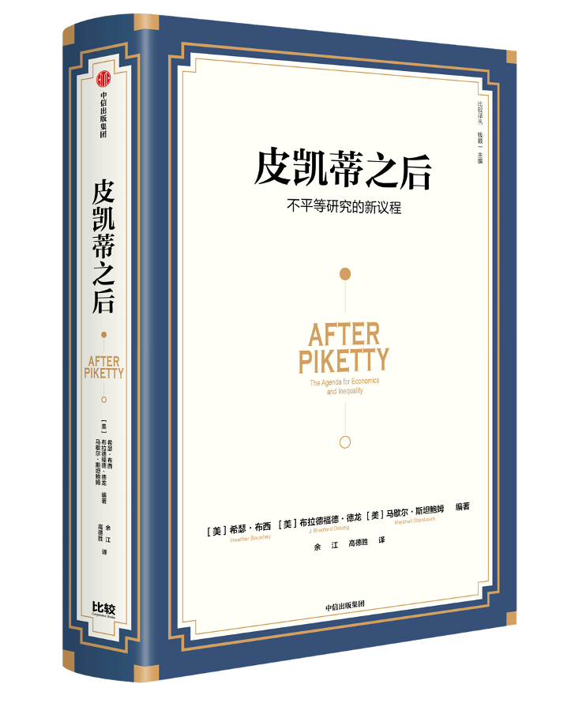

收录于合集
编者荐语：
送上一本好书
以下文章来源于比较 ，作者比较
比较 .
“以比较传递理念、思想和智识”
1.剖析《21世纪资本论》的意义及其不足。
2.多角度、全方位探究不平等的根源、影响和本质，并提出应对之策。3.皮凯蒂本人也参与讨论，并做出了回应。
内容简介：
自托马斯·皮凯蒂的《21世纪资本论》出版后，收入分配和不平等成为热点话题，不仅引发了众多媒体的关注，更激起了学界的广泛争议。
本书汇集了经济学、法学、历史学、社会学、政治学等学科众多优秀学者的研究。这些学者从各自的研究领域出发，探讨了不平等的决定因素，剖析了《21世纪资本论》的重要意义及其不足。本书是一部既有历史跨度，又有视角广度，还有强烈现实意义的跨学科著作，从中我们既可以领略人力资本、技术、职场裂变、政治体制、全球化、地理环境、性别、历史和制度、法律和政治哲学观念、监管和政策等因素如何影响不平等，又可以透视不平等对宏观经济、社会结构的重要影响。通过这些分析，本书既为经济学如何融合其他社会科学更全面地研究不平等问题设定了新的研究议程，也有助于我们更深入地理解不平等，并更好地因应不平等。从这个意义上说，本书对当下中国实现共同富裕的目标也具有重要的启发意义。
部分作者简介：
罗伯特·索洛（Robert Solow） ，1987年诺贝尔经济学奖得主，经济增长理论的奠基人。
迈克尔·斯宾塞（Michael Spence） ，2001年诺贝尔经济学奖得主。
保罗·克鲁格曼（Paul Krugman） ，2008年诺贝尔经济学奖得主。
托马斯·皮凯蒂（Thomas Piketty） ，《21世纪资本论》作者。
希瑟·布西（Heather Boushey） ，华盛顿公平增长中心联合创始人、前主席兼首席执行官，目前为拜登经济顾问委员会成员。
布拉德福德·德龙（J. Bradford Delong） , 加州大学伯克利分校经济学教授，主要研究领域为经济史、宏观经济学、经济增长和金融学。
马歇尔·斯坦鲍姆(Marshall Steinbaum） ，纽约罗斯福研究所研究员。
目录：
“比较译丛”序
引言 《21 世纪资本论》出版三年之后
布拉德福德·德龙 希瑟·布西 马歇尔·斯坦鲍姆
第一篇 反响
第1 章 皮凯蒂现象 亚瑟·戈德哈默
第2 章 皮凯蒂是对的 罗伯特·索洛
第3 章 为什么我们正处在新镀金时代 保罗·克鲁格曼
第二篇 资本的概念
第4 章 《21 世纪资本论》的经济学模型错在哪里？ 德维什·拉瓦尔
第5 章 对财富收入比的政治经济学思考 苏雷什·奈杜
第6 章 无所不在的奴隶资本 戴娜·拉米·贝里
第7 章 人力资本与财富 埃里克·尼尔森
第8 章 技术对收入与财富不平等的影响 劳拉·泰森 迈克尔·斯宾塞
第9 章 收入不平等、工资水平决定与裂变的职场 戴维·韦尔
第三篇 不平等的多个维度
第10 章 资本收入份额增加及其对个人收入不平等的影响 布兰科·米兰诺维奇
第11 章 全球不平等 克里斯托弗·拉克纳
第12 章 《21 世纪资本论》中的地理学 加雷斯·琼斯
第13 章 《21 世纪资本论》之后的研究规划 伊曼纽尔·赛斯
第14 章 财富不平等的宏观模型 玛莉亚克里斯蒂娜·德纳尔蒂 朱利奥·费拉 杨方
第15 章 对世袭资本主义的女性主义解释 希瑟·布西
第16 章 不平等扩大对宏观经济意味着什么？马克·赞迪
第17 章 不平等扩大与经济稳定 萨尔瓦多·莫雷利
第四篇 资本与资本主义的政治经济学
第18 章 不平等与社会民主主义的崛起 马歇尔·斯坦鲍姆
第19 章 资本主义的法律架构 戴维·格雷瓦尔
第20 章 全球不平等的历史起源 艾罗拉·德农古
第21 章 《21 世纪资本论》中的政治因素 伊丽莎白·雅各布斯
第五篇 皮凯蒂的答复
第22 章 走向经济学与其他社会科学的融合 托马斯·皮凯蒂

书号：978-7-5217-3806-3
编著：(美)希瑟·布西, (美)布拉德福德·德龙, (美)马歇尔·斯坦鲍姆
译者：余江 高德胜
定价：158.00
出版时间：2022年1月
点阅读原文，以8折订购本书
不平等研究的重要性
托马斯·皮凯蒂的《21世纪资本论》是有着惊人影响的意外畅销书。其庞大的读者数量表明，有如此多人急切地想要倾听和加入发达国家第二个“镀金时代”的政治经济对话。在皮凯蒂之后，针对不平等、经济政策与公平增长议题的公共知识界讨论应该有了新的焦点。
然而，反方向的社会政治力量也在发挥作用。对皮凯蒂著作的一种视角注意到，在他看来，相对平等的典型工业化经济在许多方面类似于二战后的法国：奉行戴高乐主义，实现了“辉煌30年”的经济增长。而高度不平等的典型工业化经济则类似于1987—1914年处于“美好时代”的法兰西第三共和国。第三共和国的主导潮流在政治上是激进平等主义（限于本国的男性公民）；在意识形态上是激烈地反对传统权威，尤其是宗教权威；在经济上则高度容忍甚至极度热心于对财富的保护和强化。任何已经拥有财富或试图获取财富的人，无论其财富是商店、葡萄园、年金、工厂还是大庄园，都结成伙伴，以防范有社会主义倾向的劳工阶层的嫉妒和抢夺。
皮凯蒂的著作背后有一条基本信念，即同样的这套文化、意识形态、经济、政治综合体系将主导21世纪的政治经济秩序（至少是在欧美地区），全体有产者将联合起来，防范对财富所有权及其利益的任何威胁。由此产生的作用力将把利润维持在足够高的水平，导致未来金权政治的兴起。
作为本书的编撰者，我们在两年前会说，“或许如此，但也未必”。不过在2016年美国总统大选过后，皮凯蒂的基本信念被凸显出来。1870—1914年法兰西第三共和国“美好时代”的财富主导文化也许不会重现，但我们今天的历程是当时许多重要特征的回响。
应该承认，特朗普赢得2016年美国大选得益于选举人团制度。他并未赢得多数选票，但他确实拿到了大量选票，尤其是在那些传统上支持民主党，近期却饱受经济问题困扰的地区。此外，希拉里没有像奥巴马那样，在年轻人和少数族裔中赢得巨大优势，他们的就业率降到历史新低，屡创新高的学生负债水平没有如约换来劳动力市场上的保障。在我们看来，皮凯蒂分析的经济政治现象由于特朗普的大选胜利得到了有力印证。
本书的重要性也随之凸显。它是若干作者多篇文章的结集，希望通过聚焦关系重大的问题，阐述我们认为经济学界应该在皮凯蒂之后探索哪些主要研究领域。
经济学之外
在经济学之外的社会科学研究中，我们看到皮凯蒂的著作也激起了不小浪花。《21世纪资本论》在学术领域取得了重大成功，改变了社会学、政治学与政治经济学的讨论议题。其他社会科学明显感受到皮凯蒂对不平等恶化前景和效应的论述带来的冲击。
这些冲击对历史学家、社会学家、政治学家及其他学者有何影响？我们认为，对这一问题的最佳总结反而来自一位经济学家：保罗·克鲁格曼（Paul Krugman）。克鲁格曼指出，在上一次出现巨大不平等的历史时期，即第一个镀金时代，严重的不平等与当时理解的激进民主制度（对白人男性而言）实现了完美兼容，因为“与如今一样，当时的巨额财富能买到对政策乃至公共话语的巨大影响力”。就在撰写这段话的2016年12月，我们看到美国组建了一届空前富有的内阁。财富不仅给富人提供了在权力走廊和公共领域的扩音器，而且塑造了社会效仿模式，例如追求高层职位的人应该具备怎样的素质、高级官员应该为谁的利益服务等。克鲁格曼准确地观察到，如今有着与镀金时代同样的从经济不平等到政治和社会事务影响的链条，其作用甚至更为强烈。政治和社会走向似乎不是回应当前的不平等，而是回应人们预感的一代人之后的状况：“在美国，一个有意思的现象是，不平等的政治影响甚至可以说领先于现实……从目前看，美国经济精英的主要收入来自工薪，而非资本收入。然而保守派的经济主张已经在强调和赞美资本的力量了……有时候，很多政治人物似乎正在积极重建皮凯蒂所说的世袭资本主义。”
2016年美国大选结果彰显了克鲁格曼的结论。一位对国家治理了解如此之少、毫无经验的候选人，完全靠着讲大实话的角色设定，主动迎合某些人群的偏见，为他们的利益不惜损害职业精英群体以及阻止少数族裔和移民“加塞儿”，就能赢得如此多的选票，着实令我们震惊。尽管经济学家压倒性地反对他的竞选，他的支持者却拒不接受经济学和其他领域的专家对如何有利于经济发展的公认权威。在过去40年里，美国已经以促进经济增长为名大幅降低了富人的有效税率，削弱了劳工组织以及普通工人的谈判权，并显著提升了劳动力的教育水平。这些政策造就了一个不平等的低增长国家和一群狂热而又愤怒的民粹主义选民，他们甚至愿意拥抱原始法西斯主义。如果说皮凯蒂的著作当初还显得过于激进，那么现在则恰如其分。
我们观察到，社会学家、历史学家、政治学家以及其他学者如今都在热烈并卓有成效地探讨上述问题。因此至少在我们看来，《21世纪资本论》激起的这部分反响正方兴未艾。
经济学内部
不过，经济学内部的反应似乎不那么热烈。虽然皮凯蒂在经济学论坛中现身总会让会场水泄不通，但至少到目前为止，经济学研究并未特别关注他在《21世纪资本论》中提出的宏大议题。《21世纪资本论》尚未带来我们这些热心追随者期望的对经济学研究与政策主张的深刻影响。我们相信，正如罗伯特·索洛（Robert Solow）所述，其原因在于皮凯蒂的书是一本极其严肃的著作，提出了大量值得经济学家深究的议题。“卡尔多事实”认为，由要素收入份额变化导致的不平等到20世纪中期已不再是重要的时常变化的经济观测指标，以后似乎也永远不会是。但后来证明，“卡尔多事实”并非事实，而是短暂和意外的历史状态，如今已不复存在。“库兹涅茨事实”认为，几乎所有经济体都已经或将要经历一个不平等扩大的工业化时代，然后是一个不平等缩小的实行社会民主主义的大众消费时代，最后趋于稳定。
这同样被证明不是事实，而是暂时的历史偶然现象。鉴于以上两个假说被证伪，索洛呼吁经济学家和经济学研究以皮凯蒂理应得到的严肃礼遇来重新审视《21世纪资本论》。索洛的呼吁是我们编撰本书的主要动机之一，另一个动机是经济学家乃至整个经济学科尚未对其做出恰当的响应。
2022年3月2日23:59之前留言您对作者及其研究领域或者政文观止Poliview或者政治学的想法或者建议（不少于100字），我们将本着公平公正的原则抽出一位幸运读者寄送赠书（限中国内地/大陆地区）。本次抽奖活动解释权归政文观止Poliview。
点阅读原文，以8折优惠价订购刚刚上架的 《皮凯蒂之后》